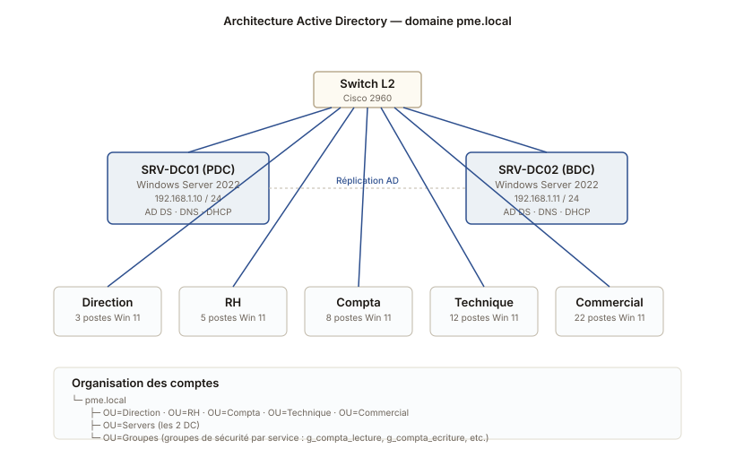

Active Directory pour une PME fictive
Mise en place d'une infrastructure Windows Server pour une entreprise fictive de 50 postes, avec deux contrôleurs de domaine, GPO et services réseau.
L'architecture

Le contexte
Le sujet du projet de seconde année : monter l'infrastructure Windows complète d'une PME imaginaire d'une cinquantaine de postes, organisée en cinq services (direction, RH, compta, technique, commercial). Chaque service a ses propres besoins en accès et en partages.
Travail individuel, sur trois semaines, dans le laboratoire de l'école avec des VMs VMware Workstation.
Ce qu'il fallait livrer
- Un domaine Active Directory
pme.localopérationnel - Deux contrôleurs de domaine (un principal, un secondaire) pour la redondance
- Un service DHCP fiable, avec réservations pour les imprimantes
- Un DNS interne intégré à l'AD
- Une organisation des comptes par OU correspondant aux services
- Des GPO classiques : verrouillage de session, fond d'écran imposé, lecteurs réseau, déploiement de Firefox et LibreOffice
Comment je m'y suis pris
Installation des deux serveurs
Deux VMs Windows Server 2022 Datacenter, SRV-DC01 et SRV-DC02, dans le même réseau. Configuration réseau en IP statique, hostname propre, mise à jour Windows Update, puis promotion en contrôleur de domaine pour le premier, et en contrôleur supplémentaire pour le second.
Création des unités d'organisation
Une OU par service, plus une OU "Servers" pour les machines, une "Groupes" pour les groupes de sécurité. J'ai fait une convention de nommage stricte (g_compta_lecture, g_compta_ecriture) pour qu'elle reste lisible quand le parc grandit.
Comptes utilisateurs en masse via PowerShell
Pour gagner du temps, j'ai écrit un script PowerShell qui lit un CSV des utilisateurs (prénom, nom, service) et qui les crée en bloc avec le bon mot de passe initial, dans la bonne OU, et les ajoute aux groupes correspondants. Ça m'a beaucoup servi pour démontrer le projet, où je devais recréer le domaine plusieurs fois.
Les GPO
Six GPO principales, appliquées au niveau du domaine ou des OU concernées : verrouillage de session après 10 minutes, fond d'écran d'entreprise, désactivation du panneau de contrôle pour les non-admins, mappage du lecteur réseau S:\ vers le partage du service, déploiement de Firefox via MSI, configuration de l'imprimante par défaut.
Ce que j'ai appris
C'est le projet qui m'a fait comprendre l'intérêt d'une organisation propre dès le départ. Au début j'ai créé les comptes "à la main" et après quelques utilisateurs c'était le bazar. PowerShell + un CSV bien structuré, et tout devient simple.
J'ai aussi vu que tester ses GPO sur une seule machine cobaye avant de les appliquer à toute une OU, c'est une habitude qui sauve des heures. Sur ce projet j'ai cassé deux fois la session de mon utilisateur de test sans pouvoir m'en remettre. Lendemain je rebootais en mode sans échec pour rétablir.